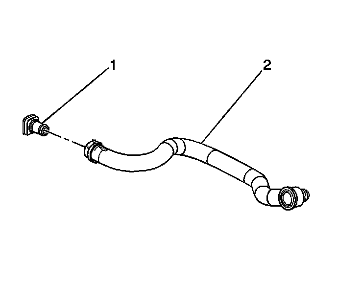
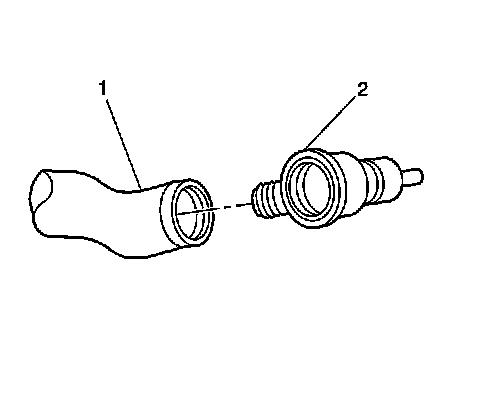

Vacuum Brake Booster Check Valve: Service and Repair
Vacuum Brake Booster Check Valve and/or Hose Replacement
Removal Procedure

1. Disconnect the vacuum hose and the brake booster vacuum check valve (1) from vacuum brake booster (2).

2. Disconnect the vacuum hose (2) from the intake manifold vacuum port (1).

3. Remove the brake booster vacuum check valve (2) from the brake booster vacuum hose (1).
Installation Procedure
1. Install the brake booster vacuum check valve (2) to the brake booster vacuum hose (1).
2. Connect the vacuum hose (2) to the intake manifold vacuum port (1).
3. Connect the vacuum hose and vacuum brake booster check valve (1) to vacuum brake booster (2).